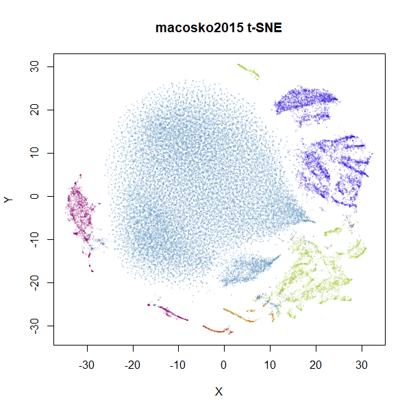

December 29 2018 New, better settings for t-SNE, better plots and a couple of new datasets. Removed neighborhood preservation values until I’ve double checked they are working correctly.
Here are some examples of the output of uwot’s
implementation of UMAP, compared to t-SNE output. As you will see,
UMAP’s output results in more compact, separated clusters compared to
t-SNE.
Data preparation
For details on the datasets, follow their links. Somewhat more detail
is also given in the smallvis
documentation. iris you already have if you are using
R. s1k is part of the sneer package.
frey, oli, mnist,
fashion, kuzushiji, norb and
cifar10 can be downloaded via snedata.
coil20 and coil100 can be fetched via coil20.
mnist <- snedata::download_mnist()
# For some functions we need to strip out non-numeric columns and convert data to matrix
x2m <- function(X) {
if (!methods::is(X, "matrix")) {
m <- as.matrix(X[, which(vapply(X, is.numeric, logical(1)))])
}
else {
m <- X
}
m
}At the time I generated this document (late December 2018), the
kuzushiji dataset had some duplicate and all-black images
that needed filtering. This seems to have been remedied as of early
February 2019. I re-ran both UMAP and t-SNE on the fixed dataset, but
the results weren’t noticeably different. For the record, the clean-up
routines I ran were:
# Remove all-black images in Kuzushiji MNIST (https://github.com/rois-codh/kmnist/issues/1)
kuzushiji <- kuzushiji[-which(apply(x2m(kuzushiji), 1, sum) == 0), ]
# Remove duplicate images (https://github.com/rois-codh/kmnist/issues/5)
kuzushiji <- kuzushiji[-which(duplicated(x2m(kuzushiji))), ]UMAP settings
For UMAP, I stick with the defaults, with the exception of
iris, coil20, and coil100 and
norb. The spectral initialization with the default
n_neighbors leads to disconnected components, which can
lead to a poor global picture of the data. The Python UMAP
implementation goes to fairly involved lengths to ameliorate theses
issues, but uwot does not.
For these datasets, a perfectly good alternative that provides a
global initialization is to use the first two components from PCA,
scaled so their standard deviations are initially 1e-4 (via
init = "spca"). This usually results in an embedding which
isn’t too different from starting via the raw PCA but is more compact,
i.e. less space between clusters. For visualizations, as long as the
relative orientation and rough distances between clusters are
maintained, the exact distances between them are not that interesting to
me.
Dimensionality was reduced to 100 by applying PCA to the data. It’s commonly applied to data before or as part of t-SNE, so to avoid any differences from this pre-processing, I applied PCA to the UMAP data. I used 100 components, rather than the usual 50 just to be on the safe side. This seemed to have no major effect on the resulting visualizations.
t-SNE settings
The Rtsne
package was used for the t-SNE calculations, except for the
iris dataset, proving troublesome once again. This time
it’s because Rtsne doesn’t allow for duplicates. For
iris only, I used the smallvis package.
For t-SNE, I also employ the following non-defaults:
-
perplexity = 15, which is closer to the neighborhood size used by UMAP - as mentioned in the UMAP settings section, for large datasets,
initial_dims = 100, which applies PCA to the input, keeping the first 100 components, rather than the usual50to minmize distortion from the initial PCA. - As
uwotalso makes use ofirlba, there is no reason not to usepartial_pca.
It would be nice to use the same initial coordinates for both
methods, but unfortunately Rtsne doesn’t apply early
exaggeration with user-supplied input. Without early exaggeration, t-SNE
results aren’t as good, especially with larger datasets. Therefore the
t-SNE plots use a random initialization.
# For iris only
iris_tsne <- smallvis::smallvis(iris, perplexity = 15, Y_init = "rand", exaggeration_factor = 4)
# Small datasets (s1k, oli, frey)
s1k_tsne <- Rtsne::Rtsne(x2m(s1k), perplexity = 15, initial_dims = 100,
partial_pca = TRUE, exaggeration_factor = 4)
# Big datasets (coil20, coil100, mnist, fashion, kuzushiji etc.)
mnist_tsne <- Rtsne::Rtsne(x2m(mnist), perplexity = 15, initial_dims = 100,
partial_pca = TRUE, exaggeration_factor = 12)Visualization
For visualization, I used the vizier package. The
plots are colored by class membership (there’s an obvious choice for
every dataset considered), except for frey, where the
points are colored according to their position in the sequence of
images.
embed_img <- function(X, Y, k = 15, ...) {
args <- list(...)
args$coords <- Y
args$x <- X
do.call(vizier::embed_plot, args)
}
embed_img(iris, iris_umap, pc_axes = TRUE, equal_axes = TRUE, alpha_scale = 0.5, title = "iris UMAP", cex = 1)For UMAP, where non-default initialization was used, it’s noted in the title of the plot (e.g. “(spca)”).
s1k
A 9-dimensional fuzzy simplex, which I created for testing t-SNE and related methods, original in the sneer package.
 |
frey
Images of Brendan Frey’s face, as far as I know originating from a page belonging to Saul Roweis.
isofaces
Yet more faces, this time the dataset used in Isomap, consisting of images of the same face under different rotations and lighting conditions. Unfortunately, it’s no longer available at the MIT website, but it can be found via the Wayback Machine. I wrote a gist for processing the data in R.
In the images below the points are colored by the first pose angle.
coil100
The COIL-100 Columbia Object Image Library.
The UMAP results are rather hard to visualize on a static plot. If
you could pan and zoom around, you would see that the rather indistinct
blobs are mainly correctly preserved loops. This is an example where
choosing a different value of the a and b
parameters would be a good idea. The t-UMAP variant, available as
tumap uses a = 1, b = 1
(effectively using the same Cauchy kernel as t-SNE) does a better job
here and is shown below on the left. The correct choice of parameters is
also important for t-SNE. On the right is the t-SNE result with a
default perplexity = 50, which does not retain as much of
the loop structure as the lower perplexity:
swiss roll
The Swiss Roll data used in Isomap. A famous dataset, but perhaps not that representative of typical real world datasets. t-SNE is know to not handle this well, but UMAP makes an impressive go at unfolding it.
 |
norb
The small NORB dataset, pairs of images of 50 toys photographed at different angles and under different lighting conditions.
 |
cifar10
The CIFAR-10 dataset, consisting of 60000 32 x 32 color images evenly divided across 10 classes (e.g. airplane, cat, truck, bird). t-SNE was applied to CIFAR-10 in the Barnes-Hut t-SNE paper, but in the main paper, only the results after passing through a convolutional neural network were published. t-SNE on the original pixel data was only given in the supplementary information (PDF) which is oddly hard to find a link to via JMLR or the article itself, and in the less widely-cited preliminary investigation into BH t-SNE.
There is an outlying orange cluster (which isn’t easy to see) in the
top right of the UMAP plot. I see the same thing in the Python
implementation, so I don’t think this is a bug in uwot
(although I also said that in a previous version of this page, and it
turned out there was a bug in uwot. The current
result really is closer to the Python version now, though). That cluster
of images is of some automobiles but they all seem to be variations of
the same image. The same cluster is present in the t-SNE plot (bottom
left), but is more comfortably close to the rest of the data.
The existence of these near-duplicates in CIFAR-10 doesn’t seem to have been widely known or appreciated until quite recently, see for instance this twitter thread and this paper by Recht and co-workers. Such manipulations are in line with the practice of data augmentation that is popular in deep learning, but you would need to be aware of it to avoid the test set results being contaminated. These images seem like a good argument for applying UMAP or t-SNE to your dataset as a way to spot this sort of thing.
We can get better results with UMAP by using the scaled PCA initialization (below on the left) and by using the t-UMAP settings (below, right):
That rogue cluster is still present (off to the lower right now), but either image is more comparable to the t-SNE result.
As the visualization of CIFAR-10 isn’t very successful with UMAP or
t-SNE, here are some results using the activations of a convnet, similar
to that used in the BH t-SNE paper. For the convnet, I used a keras implementation, taken from the Machine
Learning in Action blog. Features were Z-scaled as carried out in
the blog, but I used 100 epochs and a batch size of 128 and I also used
the RMSprop
(PDF) optimizer favored in the Deep
Learning with Python book (with lr=1e-4 and
decay=1e-6). Without any data augmentation, this gave a
test set error of 0.1655, slightly lower than the test set
result given in the BH t-SNE paper (which used a different architecture
and without the benefit of an extra 4 years of deep learning research).
After retraining with all 60000 images, the flattened output of the
final max-pool layer was used, giving 2048 features (the BH t-SNE paper
network had 1024 output activations). UMAP and t-SNE results are below.
For the UMAP results, I used the t-UMAP settings with scaled PCA
initialization.
 |
 |
Results don’t look quite as good as those in the BH t-SNE paper, but they are still an improvement. The orange cluster of automobiles remains as an outlier, even in the activation space. You can also see it in the BH t-SNE paper in the lower image in Figure 5 (orange cluster at the bottom, slightly left of center).
tasic2018
The tasic2018 dataset is a transcriptomics dataset of
mouse brain cell RNA-seq data from the Allen Brain Atlas
(originally reported by Tasic and
co-workers. There is gene expression data for 14,249 cells from the
primary visual cortex, and 9,573 cells from the anterior lateral motor
cortex to give a dataset of size n = 23,822 overall. Expression data for
45,768 genes were obtained in the original data, but the dataset used
here follows the pre-processing treatment of Kobak and Berens which applied
a normalization and log transformation and then only kept the top 3000
most variable genes.
The data can be generated from the Allen Brain Atlas website and processed in Python by following the instructions in this Berens lab notebook. I output the data to CSV format for reading into R and assembling into a data frame with the following extra exporting code:
np.savetxt("path/to/allen-visp-alm/tasic2018-log3k.csv", logCPM, delimiter=",")
np.savetxt("path/to/allen-visp-alm/tasic2018-areas.csv", tasic2018.areas, delimiter=",", fmt = "%d")
np.savetxt("path/to/allen-visp-alm/tasic2018-genes.csv", tasic2018.genes[selectedGenes], delimiter=",", fmt='%s')
np.savetxt("path/to/allen-visp-alm/tasic2018-clusters.csv", tasic2018.clusters, delimiter=",", fmt='%d')
np.savetxt("path/to/allen-visp-alm/tasic2018-cluster-names.csv", tasic2018.clusterNames, delimiter=",", fmt='%s')
np.savetxt("path/to/allen-visp-alm/tasic2018-cluster-colors.csv", tasic2018.clusterColors, delimiter=",", fmt='%s')Again, the default UMAP settings produce clusters that are bit too
well-separated to clearly see in these images. So here are the results
from using t-UMAP (the same as setting a = 1, b = 1), on
the left, and then using a = 2, b = 2 on the right:
macosko2015
Another transcriptomics data set, used as an example in openTSNE. This contains data for 44,808 cells from the mouse retina.
The raw data was fetched similarly to this shell
script from the Hemberg Lab and then the data was prepared using the
openTSNE
notebook by Pavlin Policar. Similarly to the tasic2018
dataset, data was log normalized and the 3,000 most variable genes were
retained.
I exported the data (without the Z-scaling and PCA dimensionality reduction), as a CSV file, e.g.:
np.savetxt("/path/to/macosko2015/macosko2015-log3k.csv", x, delimiter=",")
# Use these as column names
np.savetxt("/path/to/macosko2015/macosko2015-genenames.csv", data.T.columns.values[gene_mask].astype(str), delimiter=",", fmt = "%s")
np.savetxt("/path/to/macosko2015/macosko2015-clusterids.csv", cluster_ids.values.astype(int), delimiter=",", fmt = "%d")|  |
This is another result where the UMAP defaults might need a bit of fiddling with if you don’t like how separated the clusters are.
The openTSNE results use Z-scaling of the inputs before applying
t-SNE, so below are the results for UMAP and t-SNE with Z-scaling
applied (for umap, pass scale = "Z" as an
argument so you don’t have to do it manually):